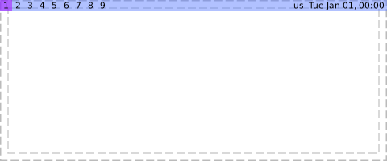
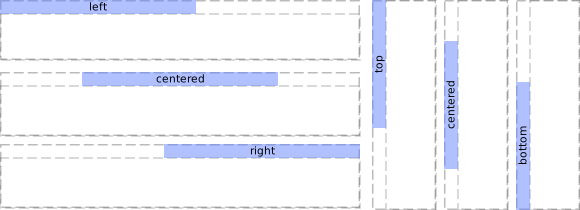
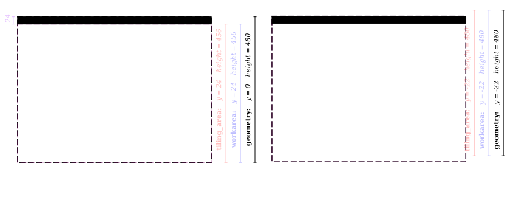
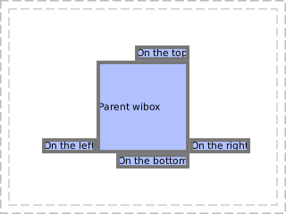
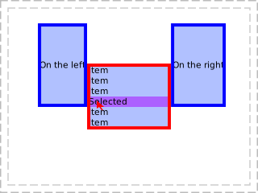
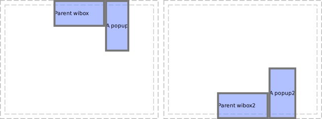
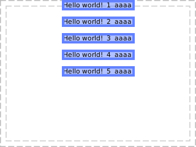

Module: awful.wibar
The main AwesomeWM "bar" module.
This module allows you to easily create wibox and attach them to the edge of a screen.

local wb = awful.wibar { position = "top" } wb:setup { layout = wibox.layout.align.horizontal, { mytaglist, layout = wibox.layout.fixed.horizontal, }, mytasklist, { layout = wibox.layout.fixed.horizontal, mykeyboardlayout, mytextclock, }, }
You can even have vertical bars too.
local wb = awful.wibar { position = "left" } wb:setup { layout = wibox.layout.align.vertical, { -- Rotate the widgets with the container { mytaglist, direction = 'west', widget = wibox.container.rotate }, layout = wibox.layout.fixed.vertical, }, mytasklist, { layout = wibox.layout.fixed.vertical, { -- Rotate the widgets with the container { mykeyboardlayout, mytextclock, layout = wibox.layout.fixed.horizontal }, direction = 'west', widget = wibox.container.rotate } }, }
Class Hierarchy
- wibox
-
- awful.popup
-
- awful.wibar
Info:
- Copyright: 2016 Emmanuel Lepage Vallee
-
Originally authored by: Emmanuel Lepage Vallee <elv1313@gmail.com>
(Full contributors list available on our github project)
Constructors
| awful.wibar {[args]} | Create a new wibox and attach it to a screen edge. | |
Object properties
| stretch | boolean | If the wibar needs to be stretched to fill the screen. | |
| align | string | How to align non-stretched wibars. | |
| margins | number or table | Margins on each side of the wibar. | |
| restrict_workarea | boolean | Allow or deny the tiled clients to cover the wibar. | |
| position | string | The wibox position. | |
| border_width | integer | Border width. | Inherited from wibox |
| border_color | string | Border color. | Inherited from wibox |
| ontop | boolean | On top of other windows. | Inherited from wibox |
| cursor | string | The mouse cursor. | Inherited from wibox |
| visible | boolean | Visibility. | Inherited from wibox |
| opacity | number | The opacity of the wibox, between 0 and 1. | Inherited from wibox |
| type | string | The window type (desktop, normal, dock, ...). | Inherited from wibox |
| x | integer | The x coordinates. | Inherited from wibox |
| y | integer | The y coordinates. | Inherited from wibox |
| width | width | The width of the wibox. | Inherited from wibox |
| height | height | The height of the wibox. | Inherited from wibox |
| screen | screen | The wibox screen. | Inherited from wibox |
| drawable | drawable | The wibox's drawable. | Inherited from wibox |
| widget | widget | The widget that the wibox displays. | Inherited from wibox |
| window | string | The X window id. | Inherited from wibox |
| shape_bounding | N/A | The wibox's bounding shape as a (native) cairo surface. | Inherited from wibox |
| shape_clip | N/A | The wibox's clip shape as a (native) cairo surface. | Inherited from wibox |
| shape_input | N/A | The wibox's input shape as a (native) cairo surface. | Inherited from wibox |
| shape | gears.shape | The wibar's shape. | Inherited from wibox |
| input_passthrough | boolean | Forward the inputs to the client below the wibox. | Inherited from wibox |
| buttons | buttons_table | Get or set mouse buttons bindings to a wibox. | Inherited from wibox |
| bg | c | The background of the wibox. | Inherited from wibox |
| bgimage | gears.suface or string or function | The background image of the drawable. | Inherited from wibox |
| fg | color | The foreground (text) of the wibox. | Inherited from wibox |
| preferred_positions | table or string | Set the preferred popup position relative to its parent. | Inherited from awful.popup |
| preferred_anchors | table or string | Set the preferred popup anchors relative to the parent. | Inherited from awful.popup |
| current_position | string | The current position relative to the parent object. | Inherited from awful.popup |
| current_anchor | string | Get the current anchor relative to the parent object. | Inherited from awful.popup |
| hide_on_right_click | boolean | Hide the popup when right clicked. | Inherited from awful.popup |
| minimum_width | number | The popup minimum width. | Inherited from awful.popup |
| minimum_height | number | The popup minimum height. | Inherited from awful.popup |
| maximum_width | number | The popup maximum width. | Inherited from awful.popup |
| maximum_height | number | The popup maximum height. | Inherited from awful.popup |
| offset | table or number | The distance between the popup and its parent (if any). | Inherited from awful.popup |
| placement | function or string or boolean | Set the placement function. | Inherited from awful.popup |
Object methods
| :remove () | Remove a wibar. | |
| :geometry (A) -> () | Get or set wibox geometry. | Inherited from wibox |
| :struts (strut) -> () | Get or set wibox struts. | Inherited from wibox |
| :setup {[args]} | Set a declarative widget hierarchy description. | Inherited from wibox |
| :find_widgets (x, y) -> table | Find a widget by a point. | Inherited from wibox |
| :emit_signal (name, ...) | Emit a signal. | Inherited from gears.object |
| :connect_signal (name, func) | Connect to a signal. | Inherited from gears.object |
| :weak_connect_signal (name, func) | Connect to a signal weakly. | Inherited from gears.object |
| :move_next_to ([obj=mouse]) -> table |
Move the wibox to a position relative to geo.
|
Inherited from awful.popup |
| :bind_to_widget (widget[, button=1]) | Bind the popup to a widget button press. | Inherited from awful.popup |
| :unbind_to_widget (widget) | Unbind the popup from a widget button. | Inherited from awful.popup |
| :to_widget () -> widget | Create a widget that reflects the current state of this wibox. | Inherited from wibox |
| :save_to_svg (path[, context=nil]) |
Save a screenshot of the wibox to path.
|
Inherited from wibox |
| :draw (wibox) | Redraw a wibox. | Inherited from wibox |
Theme variables
| beautiful.wibar_stretch | boolean | If the wibar needs to be stretched to fill the screen. | |
| beautiful.wibar_favor_vertical | boolean | If there is both vertical and horizontal wibar, give more space to vertical ones. | |
| beautiful.wibar_border_width | integer | The wibar border width. | |
| beautiful.wibar_border_color | string | The wibar border color. | |
| beautiful.wibar_ontop | boolean | If the wibar is to be on top of other windows. | |
| beautiful.wibar_cursor | string | The wibar's mouse cursor. | |
| beautiful.wibar_opacity | number | The wibar opacity, between 0 and 1. | |
| beautiful.wibar_type | string | The window type (desktop, normal, dock, …). | |
| beautiful.wibar_width | integer | The wibar's width. | |
| beautiful.wibar_height | integer | The wibar's height. | |
| beautiful.wibar_bg | color | The wibar's background color. | |
| beautiful.wibar_bgimage | surface | The wibar's background image. | |
| beautiful.wibar_fg | color | The wibar's foreground (text) color. | |
| beautiful.wibar_shape | gears.shape | The wibar's shape. | |
| beautiful.wibar_margins | number or table | The wibar's margins. | |
| beautiful.wibar_align | string | The wibar's alignments. | |
| beautiful.bg_normal | color | The default background color. | Inherited from wibox |
| beautiful.fg_normal | color | The default foreground (text) color. | Inherited from wibox |
Deprecated functions
| awful.wibar.attach [deprecated] | Attach a wibox to a screen. | |
| awful.wibar.align [deprecated] | Align a wibox. | |
| awful.wibox.stretch [deprecated] | Stretch a wibox so it takes all screen width or height. | |
Constructors
- awful.wibar {[args]}
-
Create a new wibox and attach it to a screen edge.
You can add also position key with value top, bottom, left or right.
You can also use width or height in % and set align to center, right or left.
You can also set the screen key with a screen number to attach the wibox.
If not specified, the primary screen is assumed.
Parameters:
- args
- position string The position.
- stretch string If the wibar need to be stretched to fill the screen.
- restrict_workarea boolean Allow or deny the tiled clients to cover the wibar.
- align string How to align non-stretched wibars.
- margins table or number The wibar margins.
- border_width integer Border width.
- border_color string Border color.
- ontop boolean On top of other windows. (default false)
- cursor string The mouse cursor.
- visible boolean Visibility.
- opacity number The opacity, between 0 and 1. (default 1)
- type string The window type (desktop, normal, dock, …).
- x integer The x coordinates.
- y integer The y coordinates.
- width integer The width.
- height integer The height.
- screen screen The wibox screen.
- widget wibox.widget The widget that the wibox displays.
- shape_bounding The wibox’s bounding shape as a (native) cairo surface.
- shape_clip The wibox’s clip shape as a (native) cairo surface.
- shape_input The wibox’s input shape as a (native) cairo surface.
- bg color The background.
- bgimage surface The background image of the drawable.
- fg color The foreground (text) color.
- shape gears.shape The shape.
- input_passthrough boolean If the inputs are forward to the element below. (default false)
Returns:
-
The new wibar
See also:
- args
Object properties
- stretch boolean · 1 signal · 1 theme variable
-
If the wibar needs to be stretched to fill the screen.
See also:
Usage:
awful.wibar { position = "top", screen = screen[1], stretch = true, width = 196, widget = { text = "stretched", align = "center", widget = wibox.widget.textbox }, } awful.wibar { position = "top", screen = screen[2], stretch = false, width = 196, widget = { text = "not stretched", align = "center", widget = wibox.widget.textbox }, }
Click to display more Emit signals:
property::stretchWhen the stretch value changes.selfawful.wibar The object which changed (useful when connecting many object to the same callback).new_valuestretch The new value affected to the property.
Consumed theme variables:
Theme variable Usage beautiful.wibar_stretch Fallback when stretch isn't set. - align string · 1 signal · 1 theme variable
-
How to align non-stretched wibars.
Values are:
"top""bottom""left""right""centered"

See also:
Usage:
for s, align in ipairs { "left", "centered", "right" } do awful.wibar { position = "top", screen = screen[s], stretch = false, width = 196, align = align, widget = { text = align, align = "center", widget = wibox.widget.textbox }, } end for s, align in ipairs { "top", "centered", "bottom" } do awful.wibar { position = "left", screen = screen[s+3], stretch = false, height = 128, align = align, widget = { { text = align, align = "center", widget = wibox.widget.textbox }, direction = "east", widget = wibox.container.rotate }, } end
Click to display more Emit signals:
property::alignWhen the align value changes.selfawful.wibar The object which changed (useful when connecting many object to the same callback).new_valuealign The new value affected to the property.
Consumed theme variables:
Theme variable Usage beautiful.wibar_align Fallback when align isn't set. - margins number or table · 1 signal · 1 theme variable
-
Margins on each side of the wibar.
It can either be a table with
top,bottom,leftandrightproperties, or a single number that applies to all four sides.
Usage:
awful.wibar { position = "top", screen = screen[1], stretch = false, width = 196, margins = 24, widget = { align = "center", text = "unform margins", widget = wibox.widget.textbox } } awful.wibar { position = "top", screen = screen[2], stretch = false, width = 196, margins = { top = 12, bottom = 5 }, widget = { align = "center", text = "non unform margins", widget = wibox.widget.textbox } }
Click to display more Emit signals:
property::marginsWhen the margins value changes.selfawful.wibar The object which changed (useful when connecting many object to the same callback).new_valuemargins The new value affected to the property.
Consumed theme variables:
Theme variable Usage beautiful.wibar_margins Fallback when margins isn't set. - restrict_workarea boolean · 1 signal
-
Allow or deny the tiled clients to cover the wibar.
In the example below, we can see that the first screen workarea shrunk by the height of the wibar while the second screen is unchanged.

See also:
Usage:
local screen1_wibar = awful.wibar { position = "top", restrict_workarea = true, height = 24, screen = screen[1], } local screen2_wibar = awful.wibar { position = "top", restrict_workarea = false, height = 24, screen = screen[2], }
Click to display more Emit signals:
property::restrict_workareaWhen the restrict_workarea value changes.selfawful.wibar The object which changed (useful when connecting many object to the same callback).new_valuerestrict_workarea The new value affected to the property.
- position string · 1 signal
-
The wibox position.
The valid values are:
- left
- right
- top
- bottom
local colors = { top = "#ffff00", bottom = "#ff00ff", left = "#00ffff", right = "#ffcc00" } for _, position in ipairs { "top", "bottom", "left", "right" } do awful.wibar { position = position, bg = colors[position], widget = { { text = position, align = "center", widget = wibox.widget.textbox }, direction = (position == "left" or position == "right") and "east" or "north", widget = wibox.container.rotate }, } endType constraints:
- position string Either "left", right", "top" or "bottom"
Click to display more Emit signals:
property::positionWhen the position value changes.selfawful.wibar The object which changed (useful when connecting many object to the same callback).new_valueposition The new value affected to the property.
- border_width integer · Inherited from wibox · 1 signal
-
Border width.
Click to display more Emit signals:
property::border_widthWhen the border_width value changes.selfawful.wibar The object which changed (useful when connecting many object to the same callback).
- border_color string · Inherited from wibox · 1 signal
-
Border color.
Please note that this property only support string based 24 bit or 32 bit colors:
Red Blue _| _| #FF00FF T‾ Green Red Blue _| _| #FF00FF00 T‾ ‾T Green Alpha
Click to display more Emit signals:
property::border_colorWhen the border_color value changes.selfawful.wibar The object which changed (useful when connecting many object to the same callback).
- ontop boolean · Inherited from wibox · 1 signal
-
On top of other windows.
Click to display more Emit signals:
property::ontopWhen the ontop value changes.selfawful.wibar The object which changed (useful when connecting many object to the same callback).
- cursor string · Inherited from wibox · 1 signal
-
The mouse cursor.
See also:
Click to display more Emit signals:
property::cursorWhen the cursor value changes.selfawful.wibar The object which changed (useful when connecting many object to the same callback).
- visible boolean · Inherited from wibox · 1 signal
-
Visibility.
Click to display more Emit signals:
property::visibleWhen the visible value changes.selfawful.wibar The object which changed (useful when connecting many object to the same callback).
- opacity number · Inherited from wibox · 1 signal
-
The opacity of the wibox, between 0 and 1.
Type constraints:
- opacity number (between 0 and 1)
Click to display more Emit signals:
property::opacityWhen the opacity value changes.selfawful.wibar The object which changed (useful when connecting many object to the same callback).
- type string · Inherited from wibox · 1 signal
-
The window type (desktop, normal, dock, ...).
See also:
Click to display more Emit signals:
property::typeWhen the type value changes.selfawful.wibar The object which changed (useful when connecting many object to the same callback).
- x integer · Inherited from wibox · 1 signal
-
The x coordinates.
Click to display more Emit signals:
property::xWhen the x value changes.selfawful.wibar The object which changed (useful when connecting many object to the same callback).
- y integer · Inherited from wibox · 1 signal
-
The y coordinates.
Click to display more Emit signals:
property::yWhen the y value changes.selfawful.wibar The object which changed (useful when connecting many object to the same callback).
- width width · Inherited from wibox · 1 signal
-
The width of the wibox.
Click to display more Emit signals:
property::widthWhen the width value changes.selfawful.wibar The object which changed (useful when connecting many object to the same callback).
- height height · Inherited from wibox · 1 signal
-
The height of the wibox.
Click to display more Emit signals:
property::heightWhen the height value changes.selfawful.wibar The object which changed (useful when connecting many object to the same callback).
- screen screen · Inherited from wibox · 1 signal
-
The wibox screen.
Click to display more Emit signals:
property::screenWhen the screen value changes.selfawful.wibar The object which changed (useful when connecting many object to the same callback).new_valuescreen The new value affected to the property.
- drawable drawable · Inherited from wibox · 1 signal
-
The wibox's drawable.
Click to display more Emit signals:
property::drawableWhen the drawable value changes.selfawful.wibar The object which changed (useful when connecting many object to the same callback).
- widget widget · Inherited from wibox · 1 signal
-
The widget that the wibox displays.
Click to display more Emit signals:
property::widgetWhen the widget value changes.selfawful.wibar The object which changed (useful when connecting many object to the same callback).new_valuewidget The new value affected to the property.
- window string · Inherited from wibox · 1 signal
-
The X window id.
See also:
Click to display more Emit signals:
property::windowWhen the window value changes.selfawful.wibar The object which changed (useful when connecting many object to the same callback).
- shape_bounding N/A · Inherited from wibox · 1 signal
-
The wibox's bounding shape as a (native) cairo surface.
If you want to set a shape, let say some rounded corners, use the shape property rather than this. If you want something very complex, for example, holes, then use this.
See also:
Click to display more Emit signals:
property::shape_boundingWhen the shape_bounding value changes.selfawful.wibar The object which changed (useful when connecting many object to the same callback).
- shape_clip N/A · Inherited from wibox · 1 signal
-
The wibox's clip shape as a (native) cairo surface.
The clip shape is the shape of the window content rather than the outer window shape.
See also:
Click to display more Emit signals:
property::shape_clipWhen the shape_clip value changes.selfawful.wibar The object which changed (useful when connecting many object to the same callback).
- shape_input N/A · Inherited from wibox · 1 signal
-
The wibox's input shape as a (native) cairo surface.
The input shape allows to disable clicks and mouse events on part of the window. This is how input_passthrough is implemented.
See also:
Click to display more Emit signals:
property::shape_inputWhen the shape_input value changes.selfawful.wibar The object which changed (useful when connecting many object to the same callback).
- shape gears.shape · Inherited from wibox · 1 signal
-
The wibar's shape.
See also:
Click to display more Emit signals:
property::shapeWhen the shape value changes.selfawful.wibar The object which changed (useful when connecting many object to the same callback).new_valueshape The new value affected to the property.
- input_passthrough boolean · Inherited from wibox · 1 signal
-
Forward the inputs to the client below the wibox.
This replace the shape_input mask with an empty area. All mouse and keyboard events are sent to the object (such as a client) positioned below this wibox. When used alongside compositing, it allows, for example, to have a subtle transparent wibox on top a fullscreen client to display important data such as a low battery warning.
See also:
Click to display more Emit signals:
property::input_passthroughWhen the input_passthrough value changes.selfawful.wibar The object which changed (useful when connecting many object to the same callback).new_valuebooleanThe new value affected to the property.
- buttons buttons_table · Inherited from wibox · 1 signal
-
Get or set mouse buttons bindings to a wibox.
Type constraints:
- buttons_table A table of buttons objects, or nothing.
Click to display more Emit signals:
property::buttonsWhen the buttons value changes.selfawful.wibar The object which changed (useful when connecting many object to the same callback).
- bg c · Inherited from wibox · 1 signal · 1 theme variable
-
The background of the wibox.
The background color can be transparent. If there is a compositing manager such as compton, then it will be real transparency and may include blur (provided by the compositor). When there is no compositor, it will take a picture of the wallpaper and blend it.
Type constraints:
- The c background to use. This must either be a cairo pattern object, nil or a string that gears.color() understands.
See also:
Click to display more Emit signals:
property::bgWhen the bg value changes.selfawful.wibar The object which changed (useful when connecting many object to the same callback).new_valueTheThe new value affected to the property.
Consumed theme variables:
Theme variable Usage beautiful.bg_normal The default (fallback) bg color. - bgimage gears.suface or string or function · Inherited from wibox · 1 signal
-
The background image of the drawable.
If
imageis a function, it will be called with(context, cr, width, height)as arguments. Any other arguments passed to this method will be appended.Type constraints:
- image gears.suface, string or function A background image or a function.
See also:
Click to display more Emit signals:
property::bgimageWhen the bgimage value changes.selfawful.wibar The object which changed (useful when connecting many object to the same callback).new_valueimageThe new value affected to the property.
- fg color · Inherited from wibox · 1 signal · 1 theme variable
-
The foreground (text) of the wibox.
Type constraints:
- c color The foreground to use. This must either be a cairo pattern object, nil or a string that gears.color() understands.
- color
See also:
Click to display more Emit signals:
property::fgWhen the fg value changes.selfawful.wibar The object which changed (useful when connecting many object to the same callback).new_valuecThe new value affected to the property.
Consumed theme variables:
Theme variable Usage beautiful.fg_normal The default (fallback) fg color. - preferred_positions table or string · Inherited from awful.popup · 1 signal
-
Set the preferred popup position relative to its parent.
This allows, for example, to have a submenu that goes on the right of the parent menu. If there is no space on the right, it tries on the left and so on.
Valid directions are:
- left
- right
- top
- bottom
The basic use case for this method is to give it a parent wibox:

for _, v in ipairs {"left", "right", "bottom", "top"} do local p2 = awful.popup { widget = wibox.widget { text = "On the "..v, widget = wibox.widget.textbox }, border_color = "#777777", border_width = 2, preferred_positions = v, ontop = true, } p2:move_next_to(p) endAs demonstrated by this second example, it is also possible to use a widget as a parent object:

for _, v in ipairs {"left", "right"} do local p2 = awful.popup { widget = wibox.widget { text = "On the "..v, forced_height = 100, widget = wibox.widget.textbox }, border_color = "#0000ff", preferred_positions = v, border_width = 2, } p2:move_next_to(textboxinstance, v) endType constraints:
See also:
Click to display more Emit signals:
property::preferred_positionsWhen thepreferred_positionsvalue changes.selfawful.popup The object which changed (useful when connecting many object to the same callback).new_valuepreferred_positionsThe new value affected to the property.
- preferred_anchors table or string · Inherited from awful.popup · 1 signal
-
Set the preferred popup anchors relative to the parent.
The possible values are:
- front
- middle
- back
For details information, see the awful.placement.next_to documentation.
In this example, it is possible to see the effect of having a fallback preferred anchors when the popup would otherwise not fit:

local p2 = awful.popup { widget = wibox.widget { text = "A popup", forced_height = 100, widget = wibox.widget.textbox }, border_color = "#777777", border_width = 2, preferred_positions = "right", preferred_anchors = {"front", "back"}, } local p4 = awful.popup { widget = wibox.widget { text = "A popup2", forced_height = 100, widget = wibox.widget.textbox }, border_color = "#777777", border_width = 2, preferred_positions = "right", preferred_anchors = {"front", "back"}, }Type constraints:
See also:
Click to display more Emit signals:
property::preferred_anchorsWhen thepreferred_anchorsvalue changes.selfawful.popup The object which changed (useful when connecting many object to the same callback).new_valuepreferred_anchorsThe new value affected to the property.
- current_position string · Inherited from awful.popup
-
The current position relative to the parent object.
If there is a parent object (widget, wibox, wibar, client or the mouse), then this property returns the current position. This is determined using
preferred_positions. It is usually the preferred position, but when there isn't enough space, it can also be one of the fallback.Type constraints:
- current_position string Either "left", "right", "top" or "bottom"
- current_anchor string · Inherited from awful.popup
-
Get the current anchor relative to the parent object.
If there is a parent object (widget, wibox, wibar, client or the mouse), then this property returns the current anchor. The anchor is the "side" of the parent object on which the popup is based on. It will "grow" in the opposite direction from the anchor.
Type constraints:
- current_anchor string Either "front", "middle", "back"
- hide_on_right_click boolean · Inherited from awful.popup · 1 signal
-
Hide the popup when right clicked.
Click to display more Emit signals:
property::hide_on_right_clickWhen thehide_on_right_clickvalue changes.selfawful.popup The object which changed (useful when connecting many object to the same callback).new_valuehide_on_right_clickThe new value affected to the property.
- minimum_width number · Inherited from awful.popup · 1 signal
-
The popup minimum width.
Type constraints:
- minimum_width number The minimum width. (default 1)
Click to display more Emit signals:
property::minimum_widthWhen theminimum_widthvalue changes.selfawful.popup The object which changed (useful when connecting many object to the same callback).new_valueminimum_widthThe new value affected to the property.
- minimum_height number · Inherited from awful.popup · 1 signal
-
The popup minimum height.
Type constraints:
- minimum_height number The minimum height. (default 1)
Click to display more Emit signals:
property::minimum_heightWhen theminimum_heightvalue changes.selfawful.popup The object which changed (useful when connecting many object to the same callback).new_valueminimum_heightThe new value affected to the property.
- maximum_width number · Inherited from awful.popup · 1 signal
-
The popup maximum width.
Type constraints:
- maximum_width number The maximum width. (default 1)
Click to display more Emit signals:
property::maximum_widthWhen themaximum_widthvalue changes.selfawful.popup The object which changed (useful when connecting many object to the same callback).new_valuemaximum_widthThe new value affected to the property.
- maximum_height number · Inherited from awful.popup · 1 signal
-
The popup maximum height.
Type constraints:
- maximum_height number The maximum height. (default 1)
Click to display more Emit signals:
property::maximum_heightWhen themaximum_heightvalue changes.selfawful.popup The object which changed (useful when connecting many object to the same callback).new_valuemaximum_heightThe new value affected to the property.
- offset table or number · Inherited from awful.popup · 1 signal
-
The distance between the popup and its parent (if any).
Here is an example of 5 popups stacked one below the other with an y axis offset (spacing).

local previous = nil for i=1, 5 do local p2 = awful.popup { widget = wibox.widget { text = "Hello world! "..i.." aaaa.", widget = wibox.widget.textbox }, border_color = beautiful.border_color, preferred_positions = "bottom", border_width = 2, preferred_anchors = "back", placement = (not previous) and awful.placement.top or nil, offset = { y = 10, }, } p2:move_next_to(previous) previous = p2 endType constraints:
- offset An integer value or a
{x=, y=}table.- x number The horizontal distance. (default offset)
- y number The vertical distance. (default offset)
Click to display more Emit signals:
property::offsetWhen theoffsetvalue changes.selfawful.popup The object which changed (useful when connecting many object to the same callback).new_valueoffsetThe new value affected to the property.
- offset An integer value or a
- placement function or string or boolean · Inherited from awful.popup · 1 signal
-
Set the placement function.
Type constraints:
- The function, string or boolean placement function or name (or false to disable placement) (default next_to)
- function
See also:
Click to display more Emit signals:
property::placementWhen theplacementvalue changes.selfawful.popup The object which changed (useful when connecting many object to the same callback).new_valueTheThe new value affected to the property.
Object methods
- :remove ()
- Remove a wibar.
- :geometry (A) -> () · Inherited from wibox · 1 signal
-
Get or set wibox geometry. That's the same as accessing or setting the x,
y, width or height properties of a wibox.
Parameters:
- A table with coordinates to modify.
Returns:
-
A table with wibox coordinates and geometry.
Click to display more Emit signals:
property::geometryWhen the geometry change.geotable The geometry table.
- :struts (strut) -> () · Inherited from wibox · 1 signal
-
Get or set wibox struts.
Struts are the area which should be reserved on each side of the screen for this wibox. This is used to make bars and docked displays. Note that awful.wibar implements all the required boilerplate code to make bar. Only use this if you want special type of bars (like bars not fully attached to the side of the screen).
Parameters:
- strut A table with new strut, or nothing
Returns:
-
The wibox strut in a table.
See also:
Click to display more Emit signals:
property::struts
- :setup {[args]} · Inherited from wibox
-
Set a declarative widget hierarchy description.
See The declarative layout system
Parameters:
- args An array containing the widgets disposition
- :find_widgets (x, y) -> table · Inherited from wibox
-
Find a widget by a point.
The wibox must have drawn itself at least once for this to work.
Parameters:
- x number X coordinate of the point
- y number Y coordinate of the point
Returns:
-
table
A sorted table of widgets positions. The first element is the biggest
container while the last is the topmost widget. The table contains x, y,
width, height and widget.
- :emit_signal (name, ...) · Inherited from gears.object
-
Emit a signal.
Parameters:
- name string The name of the signal.
- ... Extra arguments for the callback functions. Each connected function receives the object as first argument and then any extra arguments that are given to emit_signal().
- :connect_signal (name, func) · Inherited from gears.object
-
Connect to a signal.
Parameters:
- name string The name of the signal.
- func function The callback to call when the signal is emitted.
- :weak_connect_signal (name, func) · Inherited from gears.object
-
Connect to a signal weakly.
This allows the callback function to be garbage collected and automatically disconnects the signal when that happens.
Warning: Only use this function if you really, really, really know what you are doing.
Parameters:
- name string The name of the signal.
- func function The callback to call when the signal is emitted.
- :move_next_to ([obj=mouse]) -> table · Inherited from awful.popup
-
Move the wibox to a position relative to
geo. This will try to avoid overlapping the source wibox and auto-detect the right direction to avoid going off-screen.Parameters:
- obj
An object such as a wibox, client or a table entry
returned by
wibox:find_widgets(). (default mouse)
Returns:
-
table
The new geometry
See also:
- obj
An object such as a wibox, client or a table entry
returned by
- :bind_to_widget (widget[, button=1]) · Inherited from awful.popup
-
Bind the popup to a widget button press.
Parameters:
- widget widget The widget
- button number The button index (default 1)
- :unbind_to_widget (widget) · Inherited from awful.popup
-
Unbind the popup from a widget button.
Parameters:
- widget widget The widget
- :to_widget () -> widget · Inherited from wibox
-
Create a widget that reflects the current state of this wibox.
Returns:
-
widget
A new widget.
- :save_to_svg (path[, context=nil]) · Inherited from wibox
-
Save a screenshot of the wibox to
path.Parameters:
- :draw (wibox) · Inherited from wibox
-
Redraw a wibox. You should never have to call this explicitely because it is
automatically called when needed.
Parameters:
- wibox
Theme variables
- beautiful.wibar_stretch boolean
- If the wibar needs to be stretched to fill the screen.
- beautiful.wibar_favor_vertical boolean
-
If there is both vertical and horizontal wibar, give more space to vertical ones.
By default, if multiple wibars risk overlapping, it will be resolved by giving more space to the horizontal one:
If this variable is to to
true, it will behave like: - beautiful.wibar_border_width integer
- The wibar border width.
- beautiful.wibar_border_color string
- The wibar border color.
- beautiful.wibar_ontop boolean
- If the wibar is to be on top of other windows.
- beautiful.wibar_cursor string
- The wibar's mouse cursor.
- beautiful.wibar_opacity number
- The wibar opacity, between 0 and 1.
- beautiful.wibar_type string
- The window type (desktop, normal, dock, …).
- beautiful.wibar_width integer
- The wibar's width.
- beautiful.wibar_height integer
- The wibar's height.
- beautiful.wibar_bg color
- The wibar's background color.
- beautiful.wibar_bgimage surface
- The wibar's background image.
- beautiful.wibar_fg color
- The wibar's foreground (text) color.
- beautiful.wibar_shape gears.shape
- The wibar's shape.
- beautiful.wibar_margins number or table
- The wibar's margins.
- beautiful.wibar_align string
- The wibar's alignments.
- beautiful.bg_normal color · Inherited from wibox
-
The default background color.
The background color can be transparent. If there is a compositing manager such as compton, then it will be real transparency and may include blur (provided by the compositor). When there is no compositor, it will take a picture of the wallpaper and blend it.
See also:
- beautiful.fg_normal color · Inherited from wibox
-
The default foreground (text) color.
See also:
Deprecated functions
- awful.wibar.attach [deprecated]
-
Attach a wibox to a screen.
This function has been moved to the awful.placement module. Calling this no longer does anything.
Parameters:
- wb The wibox to attach.
- position The position of the wibox: top, bottom, left or right.
- screen The screen to attach to
See also:
- awful.wibar.align [deprecated]
-
Align a wibox.
Supported alignment are:
- top_left
- top_right
- bottom_left
- bottom_right
- left
- right
- top
- bottom
- centered
- center_vertical
- center_horizontal
Parameters:
- wb The wibox.
- align The alignment
- screen This argument is deprecated. It is not used. Use wb.screen directly.
See also:
- awful.wibox.stretch [deprecated]
-
Stretch a wibox so it takes all screen width or height.
This function has been removed.
See also: